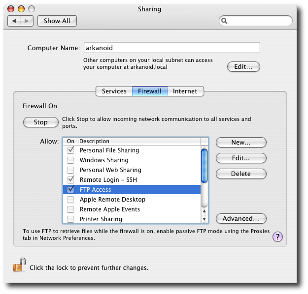
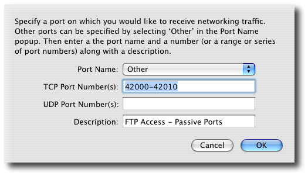
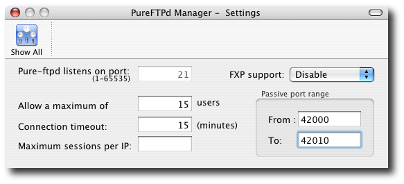
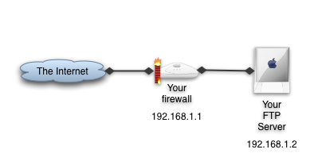
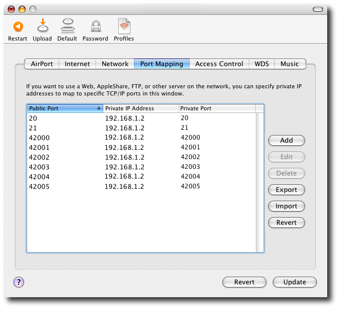

Firewall configuration1. My firewall is on the same computer as my FTP server This is the most simple case when your computer is directly connected to the Internet and running a firewall software. In this section, I will explain you how to configure Mac OS X firewall in order to accept FTP traffic. I also assume that your FTP server is running using Mac OS X Superserver (see Mac OS X preference pane in PureFTPd Manager's preferences).

When the FTP service is running, the FTP access rule of your firewall will be enabled automatically. This is enough to accept connection and transfer files in active mode. In order to enable passive mode for file transfers, you need to create a new rule on your firewall. Click the New... button and specify something like this :

The important stuff here is the port range you set for passive file transfers. You can specify a larger port range is you want. Write down the port range you chose for passive FTP and go back to PureFTPd Manager Preferences. Open the Settings pane and specify the same port range in the Passive port range box.

Restart your FTP server and you're done. 2. My FTP server is running on a dedicated machine behind a router / firewall This is a slightly more complicated scenario, but the logic is more or less the same. Let's assume we are in the following network topology:

Here's what you need to do:
2. Open a port range on your firewall for passive FTP (42000-42010) 3. On your firewall, activate NAT and redirect traffic on ports 20, 21, and 42000 to 42010 to your FTP server IP address (192.168.1.2) on the same ports. 4. Specify the port range in the Passive port range box of PureFTPd Manager Settings preference pane. Airport Base Station setup If you are using an Airport Base Station, you can do it like this (I was too lazy to go up to 42010...) :

Linux Netfilter setup If your firewall is a linux box with Netfilter capabilities, you can use can at the following lines to your firewall startup script.
#FTP Standard port
iptables -A PREROUTING -t nat -p tcp -i eth0 --dport 21 -j DNAT --to 192.168.1.2:21
iptables -A FORWARD -p tcp -i eth0 --dport 21 -o eth1 -j ACCEPT
#FTP Data port
iptables -A PREROUTING -t nat -p tcp -i eth0 --dport 20 -j DNAT --to 192.168.1.2:20
iptables -A FORWARD -p tcp -d 192.168.1.2 --dport 20 -o eth1 -j ACCEPT
#FTP Passive port range
YOUR_FTP_SERVER=192.168.1.2
PASV_PORTS="42000 42001 42002 42003 42004 42005 42006 42007 42008 42009 42010"
for pt in $PASV_PORTS; do
/sbin/iptables -t nat -A PREROUTING -i eth0 -p tcp --dport $pt \
-j DNAT --to-destination $YOUR_FTP_SERVER:$pt
/sbin/iptables -A FORWARD -d $YOUR_FTP_SERVER -p tcp --dport $pt -j ACCEPT
done
|